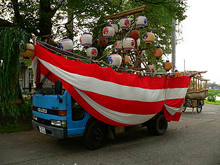
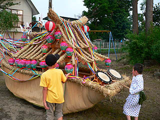

鹿島送り/秋田県大雄村
秋田県は鹿島送りと呼ばれる盆行事が盛んなところだ。
その多くは舟型の山車を引き回し、最後は川に流す、あるいは燃やすというスタイル。
このようなスタイルの行事は長崎の精霊流しや大分県宇佐市の精霊送りを例に挙げるまでもなく全国に存在する。
また「悪いモノを外界に押し戻す」という意味合いが虫送りや人形送りといわれる祭にも良く似ている。
その中でも秋田の鹿島送りは舟に人形を満載するところが特徴だ。
今回、訪れたのは鹿島送りの行事が集中する横手盆地に位置する大雄村。
あまりメジャーな存在ではないが古くから伝わる鹿島送りの様子をよく留めていると思われる祭であった。
この日は大雄村内で数カ所の鹿島送りが執り行われるとの事。
祭は夜だが、夕方頃にはすでに山車の準備は整っていた。
これは阿気地区の様子。トラックをベースにして提灯を積んだ山車は紅白の垂幕を張る事で舟形を象っている。

一方、隣にはムシロとワラでつくられた舟があった。こちらの山車に人形を乗せるのだが、まだ時間が早いせいか一体だけがポツンと乗っていた。
上部は神社の建物を模しているのだろうか。舟のアンフォルメルな形と神社形のカチっとつくってある形の対比の妙よ。
一方こちらは町役場に程近い神社の境内。
ここの舟は既にディスプレイが完了し、いつでも出撃OK！な状態に仕上がっている。

チビッコ達も太鼓をボコボコ連打したりして出撃の時を今か今かと待ちわびている。
こちらは既に人形が何体か乗っている。人形は各家庭で作られ、この日に奉納される。
日も暮れてくる時間になるとあちこちから人が集まって来て世間話をしながら人形を藁に刺していく。
ここの人形には餅のようなものが背負わされていた。
都会の意味もなくハイテンションな祭では見られないのんびりとした光景だ。
さて。しばらく暇つぶしをして再び夜の村に繰り出す。
向かったのは阿気地区。
おお、やっております。
阿気地区の上中下の三区の舟が一堂に集っている。
先程見た時は寂しかった舟にも人形がたくさん積まれていて賑やかだ。この地区の人形は馬に乗ったものが多いようだ。
人形には願い事や鹿島大明神と書かれた幟が付けられている。おっと、蝋燭の火が舟に引火してますよ。
トラック舟も御覧の通り。今にも波動砲が発射されそうな勢いである。勿論こちらのトラック舟は川には流さないので御安心を。
舟の前では子供達が太鼓を叩いている。連打系のシンプルなリズムは見るものの気持ちをどんどんミニマル化していくのだ。
恐らく他所者は我々だけだろう。
出店もなく観光客もいない祭はひっそりとした感もあるが、その分、この地区の人達の真剣な願いが際立っているようにも思える。
祭の会場を百メートルも離れると街灯もなく辺りは真っ暗になる。遠くから聞こえてくるテケテケ・・・という太鼓の音だけが祭を執り行っている証だ。
村はずれの川に行くと、鹿島舟が燃やされていた。
かつては川に流したのだが、今は川が汚れるという理由から河原で燃やしてしまうのだという。
各家庭の災厄を封じ込めた人形も炎となって昇華していく。こうして善と悪の秩序が更新されたこの地にも短い夏が訪れる訳だ。
街灯もない真っ暗な川で赤々と燃え上がる鹿島舟。
滅茶苦茶幻想的でした。
文字通り、人形焼き・・・ってか？
2005.7.
珍寺大道場 HOME